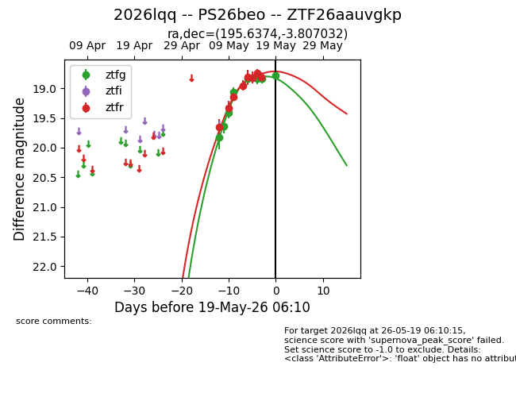
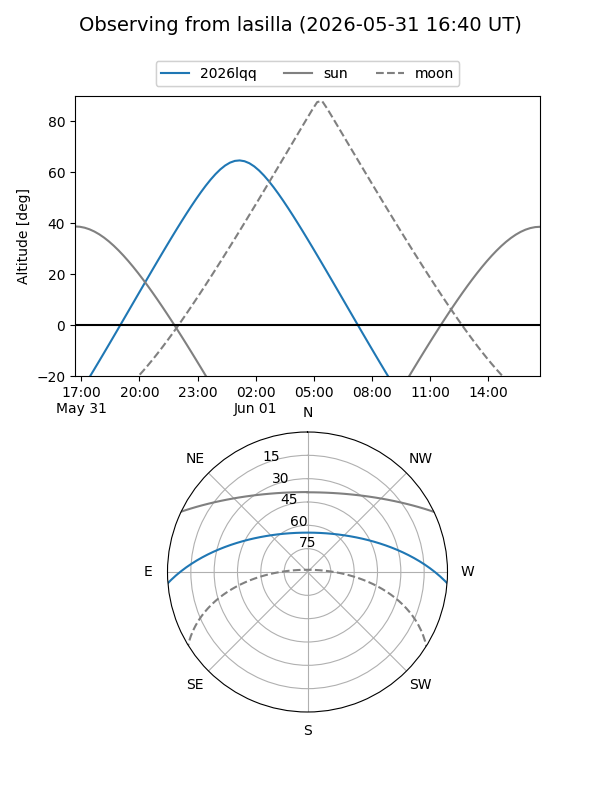
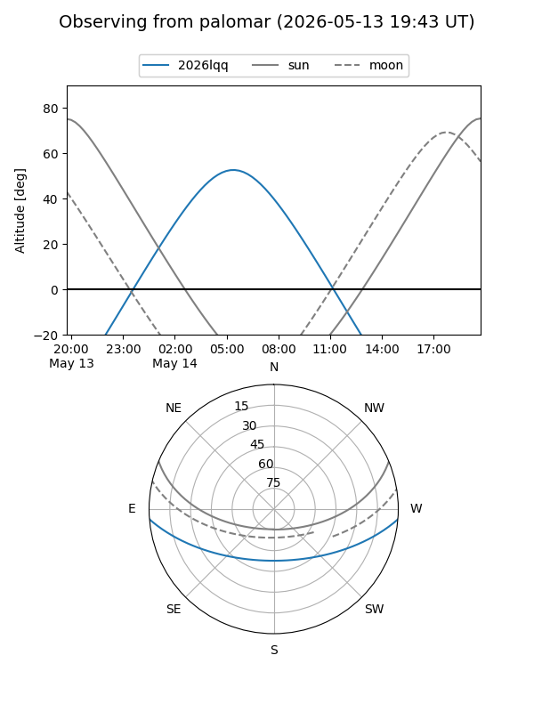
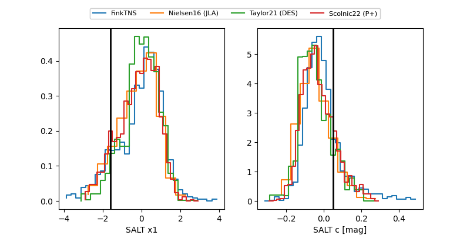

2026lqq
Target 2026lqq at 2026-05-19 06:12
Aliases and brokers:
FINK: link
Lasair: link
ALeRCE: link
TNS: link
YSE: link
alt names
ZTF26aauvgkp (ztf,fink_ztf)
2026lqq (tns,yse)
PS26beo (panstarrs)
Coordinates:
equatorial (ra, dec) = 195.6374,-3.80703
equatorial (HMS+DMS) = 13:02:32.97,-03:48:25.31
galactic (l, b) = (308.3114,+58.94861)
Flags:
Photometry:
last ztfg=18.79, ztfr=18.81
8 ztfg, 8 ztfr detections
Lightcurve

Visibility


Additional plots
